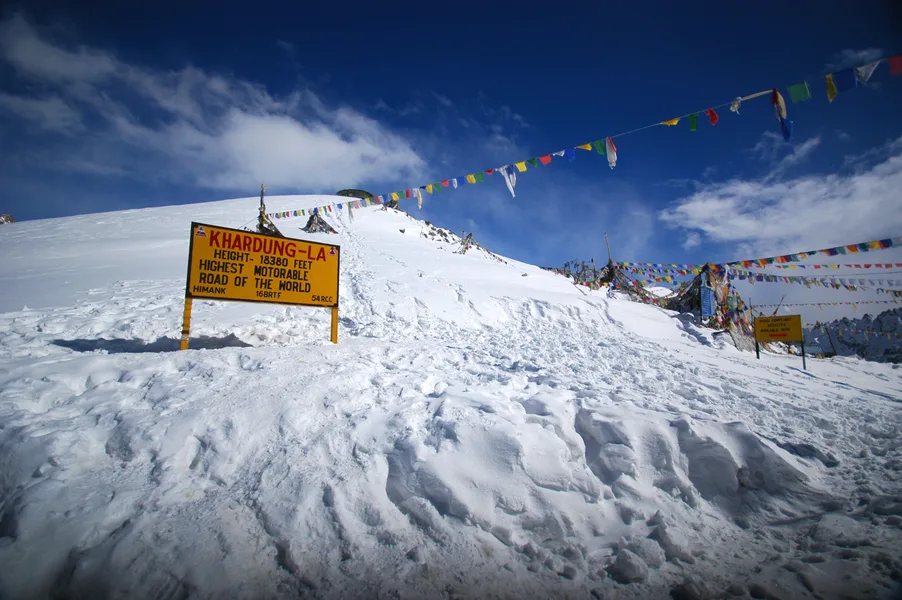
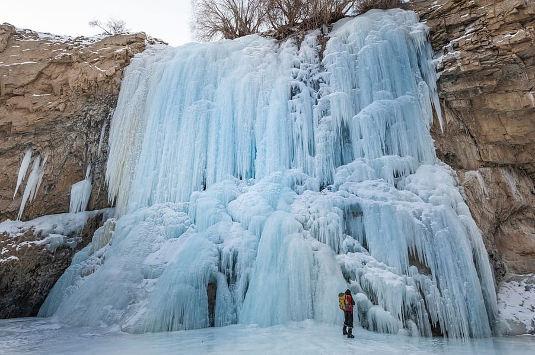

|  | Get ready to make your dream of going on a road trip in Ladakh come true where one would be experiencing the fusion of thrill, serene beauty and culture of The "Land of High Passes", as the entire tour is exclusively elected by Thrillophilia's outdoor experts. A wonderful drive through Leh-Ladakh, a land covered with snow-capped mountains and the highest motorable passes, makes you feel at the top of the world. The unique thing about the Ladakh terrain is that it has mountains, forests, deserts, lakes, rivers, waterfalls in one beautiful and dynamic geography. | ||||||||
| Clear blue skies with cold temperatures, around 5°C to 7°C in Leh and Sightseeing, camping and trekking in Nubra Valley.you can also expect Pangong Lake and sightseeing in Pangong and Clear blue skies with cold temperatures. Sightseeing and the surreal vistas of snow-capped mountains in Leh and Cool weather in Nubra Valley .You will also like Mild temperature in Pangong and Sightseeing and the surreal vistas of snow-capped mountains in Leh . |  |
Meals which don't find their mention in the package are not included in the package.
Other personal expenses, entrance tickets, and hotel taxes (if any) will have to be borne by the travellers.